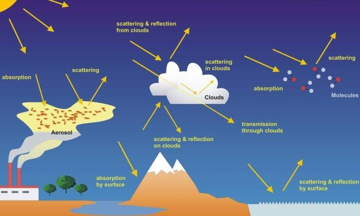

Chapter 1: Getting Started with Remote Sensing
Abstract
Remote sensing involves acquiring information about Earth’s surface through the measurement and analysis of electromagnetic radiation emitted or reflected from the surface without direct contact. Central to this process is the electromagnetic spectrum, encompassing wavelengths from ultraviolet, visible, and infrared to microwave, each interacting differently with atmospheric constituents and terrestrial surfaces. Upon encountering Earth’s atmosphere, electromagnetic radiation undergoes scattering processes such as Rayleigh, Mie, and non-selective scattering, affecting both data quality and interpretation. Understanding these scattering mechanisms is critical for effective atmospheric correction and accurate surface interpretation. Fig 1.1 Source: Julien Chimot, from Bovensmann et al., 2011
Fig 1.2 Source: NASA Science
Fig 1.3 Source: https://andrewmaclachlan.github.io/CASA0023/intro.html
Application
Landsat and Sentinel datasets have significantly impacted environmental monitoring through practical applications in agriculture, forestry, and urban studies. For example, Landsat imagery has been extensively utilized for monitoring deforestation, urban expansion, and agricultural dynamics. Hansen et al. (2013) employed Landsat data globally to analyze forest loss and gain, leveraging Landsat’s moderate spatial and temporal resolutions to map changes consistently over three decades. By loading Landsat imagery and calculating spectral indices such as NDVI and NBR, researchers effectively monitored forest cover dynamics, supporting policy decisions on sustainable forestry management and biodiversity conservation.
Fig 2.1 (A) Tree cover, (B) forest loss, and (C) forest gain.
Hansen et al. (2013) employed Landsat data globally to analyze forest loss and gain.
Fig 2.2 A study by Jin et al. (2022) demonstrated using Sentinel-2 data to estimate within-field wheat grain yield.
Fig 2.3 Schwartz et al. (2022) utilized Sentinel-1 radar backscatter data in conjunction with optical Sentinel-2 imagery to produce high-resolution forest canopy height maps using advanced deep learning techniques.
Reflection
As an urban and rural planning student, engaging with remote sensing has been both intriguing and transformative for my academic perspective. Initially, I approached remote sensing as an entirely new discipline, with little exposure to concepts such as electromagnetic waves, atmospheric scattering processes, or sensor resolutions. However, learning about how electromagnetic radiation interacts uniquely with Earth’s surfaces, creating distinctive spectral signatures, opened my eyes to the incredible potential of remote sensing technologies. Understanding these interactions, including scattering phenomena like Rayleigh and Mie scattering, has significantly improved my ability to interpret and analyze remotely sensed imagery accurately.
The exploration of Landsat and Sentinel datasets particularly fascinated me, as these satellites provide comprehensive global imagery vital for detailed environmental analyses and effective spatial planning. The practical process of accessing Sentinel data through the user-friendly Copernicus Browser inspired me, making me appreciate the power and accessibility of modern satellite data. Nonetheless, mastering these platforms required overcoming technical challenges such as understanding sensor characteristics, handling complex atmospheric corrections, and conducting rigorous accuracy assessments.
Moving forward, my interest in urban and regional development aligns perfectly with the capabilities provided by Sentinel and Landsat imagery. My future research might focus on monitoring urban sprawl, evaluating land-use changes, and assessing ecological impacts in rapidly urbanizing areas, integrating remote sensing techniques with urban spatial models. I envision using Sentinel’s high-resolution imagery accessed via Copernicus for precision planning, sustainable land management, and optimizing urban green infrastructure design.
Overall, this course has profoundly shaped my analytical and technical skills, equipping me to tackle real-world urban planning challenges with innovative, data-driven methods. I am excited about the opportunities that remote sensing will offer my future research, and I’m committed to deepening my expertise in these technologies to support sustainable urban and regional development effectively.
References
Hansen, M. C., et al. (2013). High-resolution global maps of 21st-century forest cover change. Science, 342(6160), 850-853.
Jin, X., et al. (2022). Using Sentinel-2 data to estimate within-field wheat grain yield. International Journal of Applied Earth Observation and Geoinformation, 111, Article 102789.
Schwartz, M., et al. (2022). High-resolution canopy height map based on GEDI, Sentinel-1, and Sentinel-2 data with a deep learning approach. arXiv preprint arXiv:2212.10265.
Chuvieco, E., & Huete, A. (2021). Fundamentals of Satellite Remote Sensing: An Environmental Approach (3rd ed.). CRC Press.